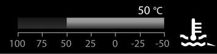
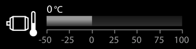
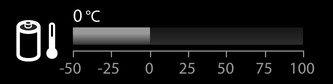

Bildschirmseite Aggregat

Taste Bildschirmseite Aggregat
Auf Bildschirmseite Aggregat umschalten.
Die Bildschirmseite Aggregat informiert über den Betriebszustand der Maschine.

Taste Ladetimer
Ladetimer ist ausgeschaltet.
Ladetimer einschalten.
Taste Ladetimer (leuchtet grün)
Ladetimer ist eingeschaltet.
Ladetimer ausschalten.
Taste Wert erhöhen
Wert erhöhen.
Taste Wert verringern
Wert verringern.

Taste Erhaltungsladung
Ladeziel auf Erhaltungsladung stellen.


Taste Wert verringern
Maximales Ladeziel verringern.

Taste Wert erhöhen
Maximales Ladeziel erhöhen.
Taste Getriebeölstand der Winde1
Getriebeölstand-Prüfung der Winde1 einschalten.
Taste Getriebeölstand der Winde1
Getriebeölstand-Prüfung der Winde1 ist nicht möglich.
Taste Getriebeölstand der Winde1 (leuchtet grün)
Getriebeölstand-Prüfung ist abgeschlossen.
Getriebeölstand der Winde1 ist ausreichend.
Taste Getriebeölstand der Winde1 (leuchtet gelb)
Getriebeölstand-Prüfung der Winde1 ist abgeschlossen.
Getriebeölstand der Winde1 ist zu niedrig.
Taste Getriebeölstand der Winde2
Getriebeölstand-Prüfung der Winde2 einschalten.
Taste Getriebeölstand der Winde2
Getriebeölstand-Prüfung der Winde2 ist nicht möglich.
Taste Getriebeölstand der Winde2 (leuchtet grün)
Getriebeölstand-Prüfung der Winde2 ist abgeschlossen.
Getriebeölstand der Winde2 ist ausreichend.
Taste Getriebeölstand der Winde2 (leuchtet gelb)
Getriebeölstand-Prüfung der Winde2 ist abgeschlossen.
Getriebeölstand der Winde2 ist zu niedrig.

Taste Getriebeölstand des Drehwerks
Getriebeölstand-Prüfung des Drehwerks einschalten.
Taste Getriebeölstand des Drehwerks
Getriebeölstand-Prüfung des Drehwerks ist nicht möglich.

Taste Getriebeölstand des Drehwerks (leuchtet grün)
Getriebeölstand-Prüfung des Drehwerks ist abgeschlossen.
Getriebeölstand des Drehwerks ist ausreichend.
Taste Getriebeölstand des Drehwerks (leuchtet gelb)
Getriebeölstand-Prüfung des Drehwerks ist abgeschlossen.
Getriebeölstand des Drehwerks ist zu niedrig.
Taste Getriebeölstand der Hauptausleger-Verstellwinde
Getriebeölstand-Prüfung der Hauptausleger-Verstellwinde einschalten.
Taste Getriebeölstand der Hauptausleger-Verstellwinde
Getriebeölstand-Prüfung der Hauptausleger-Verstellwinde ist nicht möglich.
Taste Getriebeölstand der Hauptausleger-Verstellwinde (leuchtet grün)
Getriebeölstand-Prüfung der Hauptausleger-Verstellwinde ist abgeschlossen.
Getriebeölstand der Hauptausleger-Verstellwinde ist ausreichend.

Taste Getriebeölstand der Hauptausleger-Verstellwinde (leuchtet gelb)
Getriebeölstand-Prüfung der Hauptausleger-Verstellwinde ist abgeschlossen.
Getriebeölstand der Hauptausleger-Verstellwinde ist zu niedrig.
Taste Wert verringern
Maximalen Ladestrom um 1 A verringern.
Taste Wert erhöhen
Maximalen Ladestrom um 1 A erhöhen.
Taste Ladevorgang
Ladevorgang ist unterbrochen.
Ladevorgang fortsetzen.
Taste Ladevorgang (leuchtet grün)
Ladevorgang ist freigegeben.
Ladevorgang unterbrechen.
Anzeige Speisedruck (blinkt rot)
Speisedruck ist zu niedrig.
Anzeige Speisedruck an Winde1 (blinkt rot)
Speisedruck an Winde1 ist zu niedrig.
Anzeige Speisedruck an Winde2 (blinkt rot)
Speisedruck an Winde2 ist zu niedrig.
Anzeige Getriebeöltemperatur (blinkt rot)
Temperatur des Getriebeöls im Verteilergetriebe ist zu hoch.
Anzeige Speisedrucköl-Filter (blinkt rot)
Speisedrucköl-Filter funktioniert nicht einwandfrei.
Anzeige Hydraulikölfilter (blinkt rot)
Hydraulikölfilter funktioniert nicht einwandfrei.

Anzeige Hydrauliköl (leuchtet gelb)
Füllstand des Hydrauliköltanks ist niedrig.

Anzeige Hydrauliköl (blinkt rot)
Füllstand des Hydrauliköltanks ist zu niedrig.

Anzeige Hydrauliköl (leuchtet gelb)
Füllstand des Hydrauliköltanks ist hoch.
Anzeige Kühlmittelfüllstand (leuchtet gelb)
Füllstand des Kühlmittels ist niedrig.
Anzeige Kühlmittelfüllstand (blinkt rot)
Füllstand des Kühlmittels ist zu niedrig.
Anzeige Absperrorgan (blinkt rot)
Absperrorgan Hydrauliköltank ist geschlossen.
Anzeige Ladezustand
Verfügbnare Ladungsmenge im Vergleich zur maximalen Ladungsmenge.
Anzeige Ladezustand
Eingestelltes Ladeziel der Hochvoltbatterien.
Anzeige Ladezustand (leuchtet grün)
Erhaltungsladung ist erreicht.
Anzeige Ladezustand (leuchtet gelb)
Ladezustand der Hochvoltbatterien ist unter 5 %.
Anzeige Ladezustand (leuchtet rot)
Ladezustand der Hochvoltbatterien ist unter 3 %.
Anzeige Außentemperatur
Außentemperatur.

Fig. 1889: Anzeige Kühlmitteltemperatur des Elektrokomponentenkreislaufs
Fig. 1889: Anzeige Kühlmitteltemperatur des Elektrokomponentenkreislaufs
Anzeige Kühlmitteltemperatur des Elektrokomponentenkreislaufs
Kühlmitteltemperatur des Elektrokomponentenkreislaufs.
Anzeige Kühlmitteltemperatur des Elektrokomponentenkreislaufs (leuchtet gelb)
Kühlmitteltemperatur des Elektrokomponentenkreislaufs ist hoch.
Anzeige Kühlmitteltemperatur des Elektrokomponentenkreislaufs (blinkt rot)
Kühlmitteltemperatur des Elektrokomponentenkreislaufs ist zu hoch.
Anzeige Hydrauliköltemperatur
Temperatur des Hydrauliköls.
Anzeige Hydrauliköltemperatur (leuchtet gelb)
Temperatur des Hydrauliköls ist hoch.
Anzeige Hydrauliköltemperatur (blinkt rot)
Temperatur des Hydrauliköls ist zu hoch.
Anzeige Hydraulikölheizung* (leuchtet grün)
Hydraulikölheizung ist eingeschaltet.
Anzeige 24-V-Batterie
Spannung der 24-V-Batterie.
Anzeige 24-V-Batterie (blinkt rot)
Batterie wird nicht geladen.
Anzeige Ladestrom
Ladestrom des Ladevorgangs.
Anzeige Auslastung des Elektromotors
Auslastung des Elektromotors ist reduziert.
Anzeige Auslastung des Elektromotors
Auslastung des Elektromotors.
Anzeige Drehzahl des Elektromotors
Drehzahl des Elektromotors.
Anzeige Drehzahl des Elektromotors (leuchtet gelb)
Drehzahl des Elektromotors ist hoch.
Anzeige Drehzahl des Elektromotors (blinkt rot)
Drehzahl des Elektromotors ist zu hoch.

Fig. 1904: Anzeige Temperatur des Elektromotors
Fig. 1904: Anzeige Temperatur des Elektromotors
Anzeige Temperatur des Elektromotors
Temperatur des Elektromotors.

Fig. 1905: Anzeige Durchschnittstemperatur der Hochvoltbatterien
Fig. 1905: Anzeige Durchschnittstemperatur der Hochvoltbatterien
Anzeige Durchschnittstemperatur der Hochvoltbatterien
Durchschnittstemperatur der Hochvoltbatterien.
Anzeige Durchschnittstemperatur der Hochvoltbatterien (leuchtet gelb)
Durchschnittstemperatur der Hochvoltbatterien ist hoch.
Anzeige Durchschnittstemperatur der Hochvoltbatterien (blinkt rot)
Durchschnittstemperatur der Hochvoltbatterien ist zu hoch.
Anzeige Ladedauer
Verbleibende Zeit bis Hochvoltbatterien leer sind.
Maschine ist ausgesteckt.
Anzeige Ladedauer (leuchtet grün)
Verbleibende Zeit bis eingestelltes Ladeziel der Hochvoltbatterien erreicht ist.
Maschine ist eingesteckt.
Anzeige Uhrzeit und Datum
Uhrzeit und Datum.
Anzeige Hydraulikölleckage (leuchtet gelb)
Leckage im Hydraulik-Kreislauf.